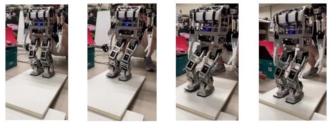

結合深度強化學習、軌跡規劃與追蹤控制於多機器人避障與導航
本研究旨在透過強化學習及階層化控制使雙足機器人穩定行走。階層化控制將機器人分為質心軌跡規劃與姿態控制。質心規劃根據零力矩點(zero moment point, ZMP)參考軌跡，由預觀控制(Preview Control)生成機器人質心軌跡；姿態控制混合運動學及動力學控制：運動學控制將機器人動態定錨為雙質量倒單擺系統(dual-mass inverted pendulum, DMIP)，動力學控制利用踝關節之串聯彈性致動器(serial elastic actuator, SEA)進行力矩控制，使機器人質心跟隨規劃軌跡。強化學習作為預觀控制的上層架構，負責產生零力矩點參考軌跡。利用MATLAB Simscape Multibody建立物理模型進行訓練，將行走穩定度放入獎勵函數的設計，使強化學習對零力矩點參考軌跡進行最佳化，提升機器人行走的性能。本研究將此架構實現於實驗室開發之雙足機器人，利用模擬及實驗驗證此架構之性能表現。
This thesis proposes a hierarchical control structure combined with reinforcement learning for bipedal robots. Hierarchical control structure consists of walking trajectory planner and low-level motion controller. Walking trajectory planner generates CoM trajectory based on predefined zero moment point (ZMP) trajectory. Low-level controller consists of kinematic controller and dynamic controller. Kinematic controller anchors robot dynamics as a dual-mass inverted pendulum (DMIP) system. Dynamic controller tracks CoM trajectory by controlling ankle torque driven by serial elastic actuator. Reinforcement learning generates ZMP trajectory. Training is implemented in MATLAB Simscape Multibody. By incorporating stability into reward function, RL optimizes parameters of ZMP trajectory to improve walking performance. The control structure is implemented on a bipedal robot built in-house. Simulations and experiments verify the robot’s performance and effectiveness of RL.
階層化控制架構
 斜坡行走實驗